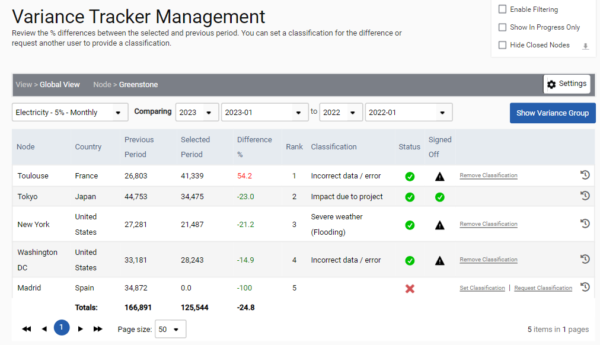
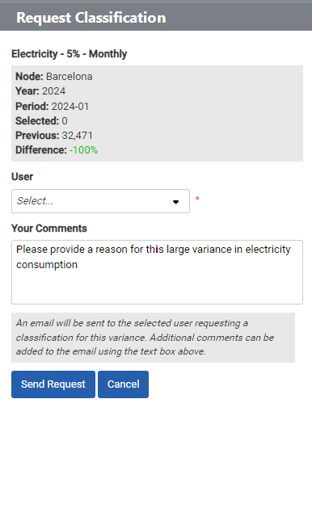
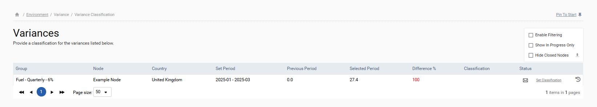
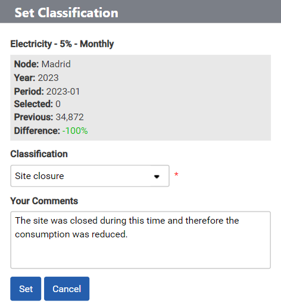
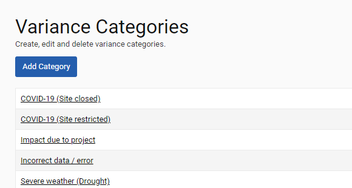
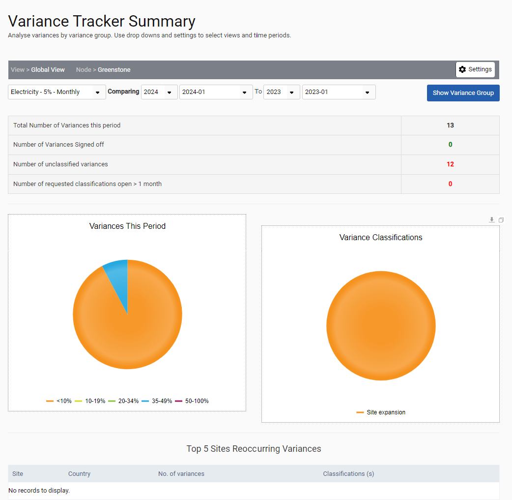

Users can request, approve, and report reasons for changes in any type of consumption data using the Variance Tracker functionality, which is found under Variance.
For example, a variance tracker could be run that compares the electricity consumption for the most recent quarter with the electricity consumption in the same quarter of the previous year, to flag sites with more than a +/- 10% difference. Nodes in the variance tracker will be ranked by the percentage difference between the two consumption values.

Once a variance tracker has been run for a quarter, an admin user can send a request to the data providers asking them to give a reason why the electricity consumption has fluctuated by clicking on the ‘Request Classification’ link. The selected user will receive an email asking them to provide a classification.

When the data provider that was asked to provide a classification log into the system goes to Variance > Variance Classification, they will see all variances for which they have been asked to provide a classification reason (e.g. change in floorspace, unseasonal weather, etc., as defined in Admin Settings).

To set a classification the user should click on the ‘Set Classification’ link and complete the details. Once a data provider has added a classification, the admin user will receive an email informing them of this and the admin user should log into the site and review the classification. Classifications can be approved or rejected by the admin user.

Variance Classification can also be set on the Variance > Variance Tracker page. When viewing the data on that page, you can also see which variances have been accepted, rejected, or are still awaiting approval.
If you would like to use the variance tracker, then users will need to be given access to this functionality in Admin Settings > Users > User Details. The variance categories can be customized and are created in Admin Settings > Category Management > Variance.

Variance Summary
The Variance tracker summary dashboard displays a summary of the variances for a selected variance group and time periods. The summary page can be reached at ‘Variance > Variance Summary’.
